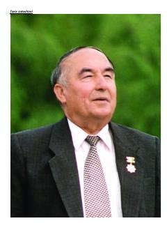

EVO'zbekiston xalq shoiri Erkin Vohidov hayoti va ijodiga bag'ishlangan ma'lumotnoma.
Mazkur kitob O'zbekiston Qahramoni, taniqli shoir va jamoat arbobi Erkin Vohidovning hayoti, ijodiy faoliyati hamda adabiy merosiga bag'ishlangan. Unda shoirning tarjimai holi, mashhur she'riy to'plamlari, dostonlari va tarjimalari haqida batafsil ma'lumot berilgan.